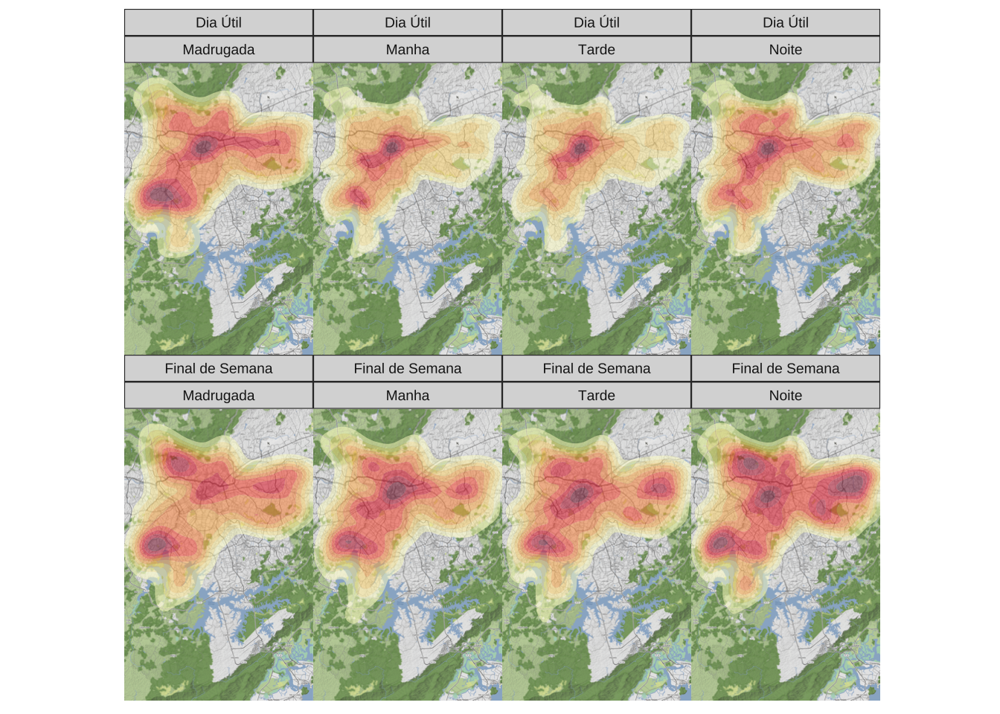

Neste post exploro o padrão espacial dos acidentes de trânsito em São Paulo. O detalhamento dos dados nos permite enxergar padrões sazonais intradiários e intrasemanais. De maneira geral, o maior número de acidentes coincide com locais e regiões de grande tráfego de veículos.
data-visualization
mapas
sao-paulo
ggplot2
Author
Vinicius Oike
Published
March 15, 2024
Trânsito
Panorama
Agregando todos os acidentes de trânsito não-fatais vê-se que há dois principais clusters de acidentes: o maior deles começa na região do Centro Histórico e se estende até a região da Paulista e mais ao oeste chegando até o Itaim Bibi; o segundo cluster, menos intenso, aparece entre a região de Santo Amaro e Campo Limpo. No geral, os focos de acidente, seguem as principais de vias de tráfego.
Os dados se referem a todos os acidentes de trânsito não-fatais registrados dentro do município de São Paulo em 2023.
Finais de semana
O painel de mapas abaixo subdivide os dados entre acidentes que ocorreram no final de semana x dias de trabalho e pelo período do dia. Os dados são normalizados dentro de cada célula para facilitar a leitura do padrão: em termos absolutos, a maior parte dos acidentes ocorre durante a manhã e a tarde nos dias úteis.
É interessante notar como o padrão de acidentes se torna muito mais disperso nos finais de semana em relação aos dias úteis. Durante a semana, os acidentes à tarde estão quase que totalmente concentrados no Centro Histórico da cidade; já no final de semana, durante o mesmo período, os acidentes estão espacialmente dispersos por todas as zonas da cidade.

Hora do dia
As horas do dia com maior número de acidente são, grosso modo, os horários de pico, quando há maior volume de veículos trafegando.
---title: "Acidentes de Trânsito em São Paulo"date: "2024-03-15"categories: ['data-visualization', 'mapas', 'sao-paulo', 'ggplot2']description: "Neste post exploro o padrão espacial dos acidentes de trânsito em São Paulo. O detalhamento dos dados nos permite enxergar padrões sazonais intradiários e intrasemanais. De maneira geral, o maior número de acidentes coincide com locais e regiões de grande tráfego de veículos."format: html: code-tools: trueexecute: echo: false warning: false message: false---# Trânsito```{r setup}library(dplyr)library(sf)library(geobr)library(ggplot2)library(ggmap)library(showtext)font_add_google("Orbitron", "Orbitron")font_add_google("Roboto Mono", "Roboto Mono")showtext_auto()cores =c("#07204E", "#07214F", "#072351", "#082453", "#082655", "#092857", "#092959", "#0A2B5B", "#0A2D5C", "#0B2E5E", "#0B2F5F", "#0C3160", "#0C3261", "#0D3463", "#0D3563", "#0D3563", "#0D3664", "#0D3764", "#0E3865", "#0E3965", "#0E3966", "#0E3A66", "#0F3C68", "#11406B", "#12436F", "#134772", "#154A75", "#164E79", "#18527C", "#195580", "#1A5983", "#1D5E87", "#20638B", "#236990", "#256E94", "#2A7598", "#307E9D", "#3787A2", "#3D90A7", "#4399AC", "#49A1B1", "#50AAB6", "#56B3BB", "#5CBBC0", "#67BFBB", "#73C3B5", "#7EC7AF", "#8ACBA9", "#96CEA1", "#A3D098", "#B0D38F", "#BDD586", "#C9D77E", "#D3D877", "#DEDA70", "#E8DB68", "#F2DC61", "#F2DA61", "#F3D860", "#F4D65F", "#F4D45E", "#F5D25D", "#F6CF5C", "#F6CD5C", "#F7CB5B", "#F8C85A", "#F8C55A", "#F8C35A", "#F8C05A", "#F8BD5A", "#F8BA5A", "#F8B85A", "#F8B55A", "#F8B25A", "#F7AF5A", "#F7AC5A", "#F7A85A", "#F7A55A", "#F6A15C", "#F59C5F", "#F59862", "#F49364", "#F38E67", "#F38A6A", "#F2856C", "#F2816F", "#F27C71", "#EB7673", "#E47175", "#DD6B77", "#D56679", "#CB607A", "#BF5A7B", "#B2547D", "#A64F7E", "#9A497F", "#8E4380", "#823D82", "#763783", "#6A3285" )inds =c(1, 6, 12, 24, 30, 36,45, 50, 56, 65, 66, 67,67, 71, 73, 77, 85, 90,95, 30, 27, 20, 15, 10 )``````{r data}dat = qs::qread("/Users/viniciusoike/Documents/GitHub/weekly_viz/data/car_accidents_non_fatal.qs")dat = dat %>%filter( ts_year ==2023,!is.na(lat),!is.na(lng) ) %>%select(lat, lng, victims_total, ts_day_shift, ts_date, ts_time_accident, ts_weekday)dat = dat %>%mutate(ts_weekday = stringr::str_to_title(ts_weekday),ts_weekday =factor( ts_weekday,levels =c("Domingo", "Segunda", "Terça", "Quarta", "Quinta", "Sexta", "Sábado") ),ts_time_accident = lubridate::hm(ts_time_accident),ts_hour = lubridate::hour(ts_time_accident) )accidents =st_as_sf( dat,coords =c("lng", "lat"),crs =4326,remove =FALSE )``````{r get-map}spborder = geobr::read_municipality(3550308, showProgress =FALSE)spborder =st_transform(spborder, crs =4326)spborder$geoid =1accidents = accidents %>%st_join(spborder) %>%filter(!is.na(geoid))spborder = geobr::read_municipality(3550308)spborder =st_transform(spborder, crs =4326)basemap = ggmap::get_stadiamap(as.numeric(st_bbox(spborder)), zoom =12)``````{r}accidents_hour = dat |>summarise(total =sum(victims_total), .by ="ts_hour") |>arrange(ts_hour) |>mutate(ts_hour =factor(ts_hour))``````{r plot-histogram}p_hist =ggplot(accidents_hour, aes(ts_hour, total)) +geom_col(aes(fill = ts_hour)) +geom_hline(yintercept =0) +scale_y_continuous(labels = scales::label_number(big.mark =".")) +scale_fill_manual(values = cores[inds]) +guides(fill ="none") +labs(title ="Acidentes de trânsito por hora do dia",x =NULL,y ="Total",caption ="Fonte: INFOSIGA SP") +theme_minimal(base_family ="Roboto Mono") +theme(panel.grid.minor =element_blank(),panel.grid.major.x =element_blank(),axis.text =element_text(size =10, family ="Orbitron") )``````{r map-geral}map_geral =ggmap(basemap) +geom_density_2d_filled(data = accidents,aes(x = lng, y = lat),contour_var ="ndensity",alpha =0.5,color =NA,breaks =seq(0.1, 1, 0.1) ) +scale_fill_brewer(palette ="YlOrRd", direction =1) +guides(fill ="none") +labs() + ggthemes::theme_map()``````{r map-facet}accidents = accidents |>mutate(is_weekend =if_else(ts_weekday %in%c("Domingo", "Sábado"), "Final de Semana", "Dia Útil"),is_weekend =factor(is_weekend) )map_grid =ggmap(basemap) +geom_density_2d_filled(data = accidents,aes(x = lng, y = lat),contour_var ="ndensity",alpha =0.5,color =NA,breaks =seq(0.1, 1, 0.1) ) +scale_fill_brewer(palette ="YlOrRd", direction =1) +facet_wrap(vars(is_weekend, ts_day_shift), nrow =2, ncol =4) +guides(fill ="none") +labs() + ggthemes::theme_map()```## PanoramaAgregando todos os acidentes de trânsito não-fatais vê-se que há dois principais clusters de acidentes: o maior deles começa na região do Centro Histórico e se estende até a região da Paulista e mais ao oeste chegando até o Itaim Bibi; o segundo cluster, menos intenso, aparece entre a região de Santo Amaro e Campo Limpo. No geral, os focos de acidente, seguem as principais de vias de tráfego.Os dados se referem a todos os acidentes de trânsito não-fatais registrados dentro do município de São Paulo em 2023.```{r}map_geral```## Finais de semanaO painel de mapas abaixo subdivide os dados entre acidentes que ocorreram no final de semana x dias de trabalho e pelo período do dia. Os dados são normalizados dentro de cada célula para facilitar a leitura do padrão: em termos absolutos, a maior parte dos acidentes ocorre durante a manhã e a tarde nos dias úteis.É interessante notar como o padrão de acidentes se torna muito mais disperso nos finais de semana em relação aos dias úteis. Durante a semana, os acidentes à tarde estão quase que totalmente concentrados no Centro Histórico da cidade; já no final de semana, durante o mesmo período, os acidentes estão espacialmente dispersos por todas as zonas da cidade.```{r}map_grid```## Hora do diaAs horas do dia com maior número de acidente são, grosso modo, os horários de pico, quando há maior volume de veículos trafegando.```{r}p_hist```\* Dados: [Painel de Dados SigaSP](http://painelderesultados.infosiga.sp.gov.br/dados.web/ViewPage.do?name=acidentes_naofatais&contextId=8a80809939587c0901395881fc2b0004)